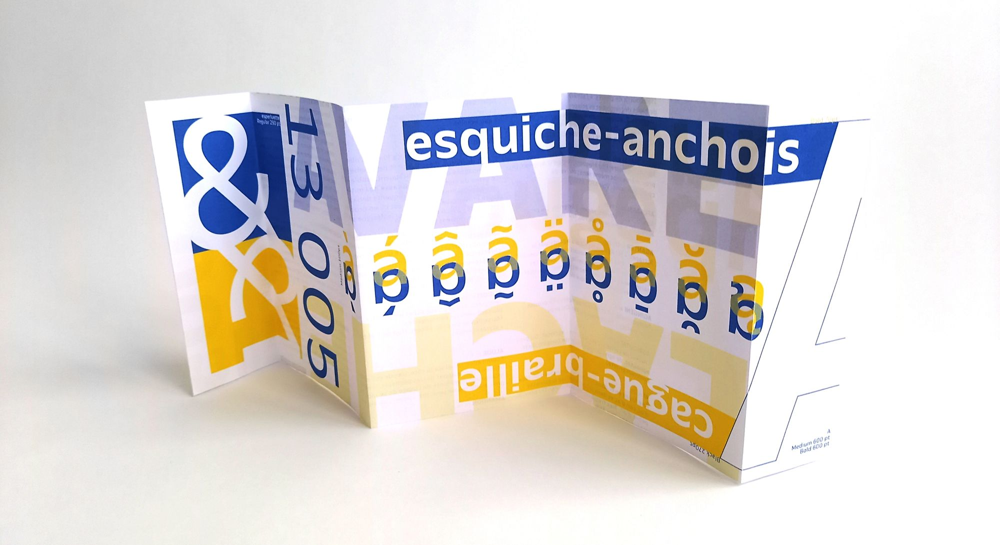
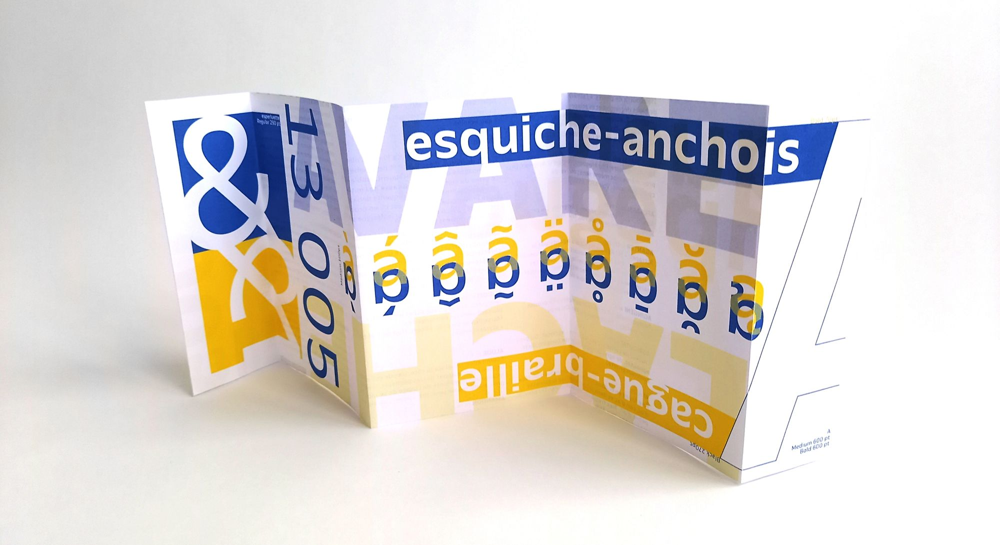
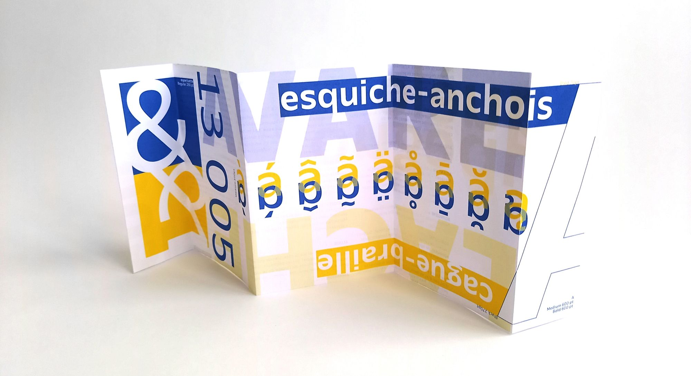

Ce specimen présente le caractère paysage, dessiné par Anton Moglia. Il se présente sous la forme d'un ensemble de 3 dépliants de 5 pages chacun, format carte postale une fois fermée. Le contenu textuel traite essentiellemnt de la langue occitane, car cette typographie s'inspire de l'antique olive, une typographie marseillaise. On y retrouve des extraits de dictionnaire, des expressions et des descriptifs de la langue d'oc.
